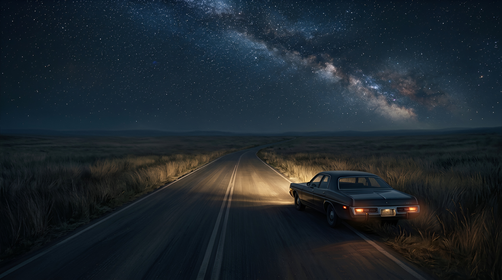

MEMORY OF THE SAVANNAH

“Good evening, dear listeners. I hope you're all having a pleasant night. It’s just past two in the morning, and I’ll be here to keep you company until four. To those of you still tuned in, especially our late-night drivers making their way along Route 15, also known as TL Möllerhatté, please make sure you have enough fuel for the journey ahead. And, of course, don’t forget to say a little prayer for a safe trip. Now, a quick reminder for anyone travelling along Route 15 tonight. Please, whatever you do, do not pull over or stop along the way for any reason. I repeat, do not stop your vehicle until you’ve reached the next town. If you’re feeling tired or struggling to keep your eyes open, push on until you reach a safe place to rest. Your safety is our priority. Stay safe out there, folks, and keep listening,” said a woman’s voice through the radio.
I yawned widely and rubbed my face. Still a few hours to go before sunrise, and I hadn’t even made it halfway through the journey I’d started three hours ago.
Route 15 Northeast Möllerhatté is one of the longest roads in the country. It cuts through several towns, winds along hillside ridges, and eventually opens into a vast, seemingly endless grassland. I’d taken this road before, but this was my first time driving it alone in the middle of the night.
Although it's known as one of the safest highways in the nation, 15/TL Möllerhatté has a dark past. Twenty-three years ago, a string of unsolved murders occurred at kilometer marker 156 over the course of three months. Seven bodies of young women were discovered by midnight drivers, just lying there by the roadside. Police never identified the killer, though they suspected it was the work of a single person, and they found no clear motive. The victims were all found in the same condition: skin tinged with bluish tones, but with no visible wounds or signs of a struggle.
There were some eerie similarities. All the women were between twenty and twenty-five years old, tall, with long dark hair. Each had been reported missing for weeks before they turned up dead. Some suspected a satanic cult or occult ritual, but there was never enough evidence to prove anything.
For decades, this road has silently witnessed both brutality and despair. That old murder case wasn’t the only horror it’s seen. Other lives have been lost here too, whether taken by force or surrendered willingly. Old, rusted cars can still be spotted abandoned on the roadside, left behind by desperate or doomed drivers.
My brother Robert had been worried when I told him I’d be taking Route 15/TL Möllerhatté alone to get to his second wedding in Marfa. He even tried to wire me money so I could fly instead, but I flat-out refused. I knew he’d already spent a fortune on the wedding, and I didn’t want to add to his stress. I assured him I wasn’t some helpless girl, and besides, I’d brought a small gun, just in case. What’s the worst that could happen?
I yawned again, eyes tearing, and stretched my stiff legs. I glanced out the window at the horizon, where a faint golden light shimmered. I decided to stop and rest at the first diner or gas station I came across. There weren’t any houses or trees in sight, just an endless stretch of black grassland beneath a star-filled sky.
The road curved gently southward, wrapping around jagged rock formations that loomed darkly against the night sky. I was about to turn down the radio, now playing a soft and melancholic tune, when I spotted something up ahead; a black car pulled over on the left shoulder. I slowed down, squinting, studying it.
Was the driver in trouble? Out of gas? Resting? Hurt?
As I got closer, I turned on my high beams and approached slowly from the side. That’s when my instincts kicked in. Don’t stop. Just keep going. I’d heard too many horror stories about late-night traps and highway robberies. Still, I drove forward cautiously, torn between stopping and just continuing my drive.
When I was right beside the vehicle, I saw a pale blue light glowing inside. A girl and a young man sat in the front seats, each with a cigarette between their lips.
I came to a full stop as they both turned to look at me. Their faces, illuminated by the soft blue light, were impossibly perfect. For a moment, I was completely mesmerized by the strange, beautiful pair.
“Hey! How’s it going?” the girl called out with a friendly smile. Her long dark hair fell in sleek curtains around her flawless oval face, and her full lips exhaled ribbons of smoke that curled into the air like a fine mist.
“Heading north?” the guy asked, exhaling a plume of smoke with casual grace. His voice was deep, almost melodic, either from years of smoking or just naturally smooth. His hair was buzzed short on the sides, with the top slicked back neatly. I had never seen a man so strikingly handsome. His features looked sculpted, almost unreal, and his pale blue eyes were sharp and piercing, even in the dim light.
“Oh… Yeah. I’m on my way to Marfa,” I replied, snapping out of my trance, forcing myself to look away from his eyes. I swallowed hard as his lips curled into a faint, knowing smile, dimpling one cheek. There was something mischievous in his gaze.
“You look a little tired, Casey,” said Oliver, lighting another cigarette. “Don’t you think so, Jane?”
“Wait, what?” I blinked, confused. “How do you… know my name?”
They laughed softly. Jane shook her head, resting her chin on her palm.
“Casey, you told us your name ten minutes ago,” she said sweetly. Her southern accent gave her words a slow, lazy rhythm.
Ten minutes? It felt like barely a minute had passed since I pulled over.
“Right. I guess I am kind of tired.” I rolled my eyes and shook my head, remembering that I’d planned to rest if I saw a diner or motel.
“You should be careful, Casey. This road’s no place for a girl like you to be driving alone at night,” Oliver warned. “Don’t pick up any strangers. And don’t accept rides from anyone, either.”
“Those poor girls didn’t come out here to go camping, you know,” Jane added from the backseat.
“Stranger danger,” I muttered under my breath.
I blinked, dazed, watching the wild grass sway in the wind as we continued driving.
Wait... I didn’t remember letting them into my car. How had they gotten in?
The window next to me was cracked open, letting in a cold draft that blew strands of hair into my face.
“Oliver, where did you get… that?” I asked, pointing to the strange pendant hanging from a chain around his neck. In the center of the circle were two interlocking triangles, inverted to form a star.
“Oh, this? A gift from my father. Come closer, you can take a look,” he said with a smile, eyes still on the road.
“Maybe you should focus on driving,” I replied, eyeing his neck with a strange, growing yearning.
“It’s a few hundred years old, you know? Passed down from father to son for generations,” Oliver said as my fingers traced the shape of the pendant. Our skin touched, and my breath caught. The soft hair on his chest sent a wave of warm, unfamiliar sensation through me, a euphoric chill that made every nerve stand on end. I was awash in nostalgia, as if I were back on the beach in Marfa where I used to spend summers as a child. Up close, there was a faint, unfamiliar scent about him, something woody, like cedar, mingled with the clean, metallic smell of air before a storm.
I tilted my head to look at him. Our eyes met. His icy blue gaze seemed to ignite something deep and buried inside me. The cigarette dangling from his lips still trailed thick, white smoke.
“Why don’t you two get a room already?” Jane teased from the back.
I pulled away quickly, adjusting my seat to put some distance between us. My heart pounded. I felt exposed, as if he could hear it. As if he could feel the heat radiating from my burning cheeks.
“Oliver, can you pull over a second?” I asked. “I think I’m gonna be si—”
BOOM.
A deafening crash shattered the silence.
“Looks like a storm’s coming,” Jane remarked, staring up at the sky, now choked with dark clouds. “We should visit Greenwest Spring sometime. Maybe next summer?”
“Greenwest Spring?” I echoed, confused. “Never heard of it. Where is it?”
“Out on the west coast. It’s where we grew up. It’s beautiful. Summers last longer there. The sun’s always shining. The air’s warm and kind. Not like this place,” Jane scoffed. “God, I miss it.”
There was something bitter in her voice, and I couldn’t help but wonder what made that place so special compared to here, where I’d wasted years chasing heartless boys who never took me seriously.
The road climbed upward, winding eastward through gentle hills, before dipping into a wide valley that stretched out to the horizon. In the far north, I could see city lights twinkling like jewels under a veil of light rain, casting a golden sheen over the sky.
“Casey? Casey, you still with me?” Oliver’s soft voice pulled me back.
“Oh, sorry… I think I’m just tired,” I murmured, rubbing my face. He chuckled gently, brushing my cheek with his fingers. A calming silence settled over us. I could hear the soft patter of rain on the savannah outside.
“What were you saying?”
“I asked if you remembered Jane’s wedding in New York two years ago.”
I stared at him, confused. He was still focused on the road. God, he looked so handsome like that.
“Wedding… New York?” I whispered. Instinctively, I glanced behind me. The backseat was empty and dark.
“I’ve never even been to New York.”
“Jane? Where is she? Oliver, what—”
“Hey, dumb girl. Fell asleep again, didn’t you?” Jane snapped from the driver’s seat. I opened my eyes to find myself curled against Oliver in the backseat.
“Jane?” I sat up, dazed. Outside, the rain poured down harder, darkening the grasslands even more. A large neon-lit road sign sped past: WELCOME TO GREENWEST SPRING.
Fog still lingered in my mind. I tried to think, to remember where I was… what time it was.
“Ooh, I love this song,” Jane said suddenly, turning up the radio.
“I know it seems alright to just wait 'til the feeling's right...
But I can see it in your eyes, a shade of blue and a signal fire...”
“Who’s this song by?” I asked, settling into Oliver’s arms, breathing in that familiar scent clinging to his skin. It always reminded me of warm summer days on the eastern shore.
“You like it?” Oliver asked, brushing my cheek gently.
“Of course. It’s the song that was playing at that café… when we first met,” I said. I glanced at the dark, empty backseat once more.
“You look tired, Oliver,” I said, resting my head on his shoulder. “Maybe we should pull over for a bit.”
We stopped on the shoulder, holding each other, cigarettes smoldering between our lips.
“We shouldn’t stay long,” I said, blowing smoke into his face, which he playfully swatted away, laughing.
“We should move to the back,” he said, eyes gleaming with mischief.
“Maybe we should just find a motel and get a room,” I replied, giggling. He flicked his cigarette out the window, crawled into the back seat, and pulled me into his arms.
When our lips touched, all the colors around us blurred into one. The line between space and form dissolved. I could no longer tell where anything began or ended.
Another loud BOOM tore through the air.
“Looks like we’ve got company,” Oliver said, glancing at a car that had just pulled up beside ours.
The window rolled down, and a pale, narrow-faced girl looked at us with a puzzled expression.
“Hey,” She greeted cheerfully.
“Hey there,” I said, blowing smoke through the cracked window.
“Is your car broken down? Do you need a ride?” the girl asked. “Oh, and I’m Casey.”
“I’m Jane,” I said, waving. “And this is Oliver.”
“You heading north too?” Oliver asked. The girl stared at him for a long moment, clearly dazed. He always had that effect.
“Oh… yeah. I’m heading to Marfa. Do you guys need a lift?”
“You’re a lifesaver. We need to be there by noon,” Oliver replied as I gathered my scattered things from the backseat.
“Thanks so much. You’re our hero tonight,” I told her, hopping into the back of her car. “We should hurry. Looks like a storm’s coming. And hey, let Oliver drive so you can rest. You look tired, Casey.”
Oliver didn’t argue. He just smiled strangely as she handed him the keys.
And just like that, we were back on the dark, silent road. No other cars in sight.
“Oh hey, I love this song,” said Oliver. “Mind if I turn it up?”
Casey nodded and turned up the volume.
“Who’s it by?”
“Deep Burn Blue, by The Paper Kites,” Oliver and I said in unison.
“Oliver loves those mopey songs,” a mocking voice chimed behind me. I turned, but no one was there. The backseat was empty.
“Oliver, where’d you get that necklace?” Casey asked, pointing at it.
“Oh this? A gift… from my… father…” we both said. My voice echoed his, hauntingly.
“Ccoommmeee clooosseerrr…”
The car suddenly pulled over. Jane dragged Oliver into her arms, and they began to kiss furiously in the back seat. Casey watched them through the rearview mirror, eyes smoldering.
“Why don’t you two just get a room,” she said, smiling, but her eyes didn’t.
Jane locked eyes with her, defiant in Oliver’s embrace.
“Ollie, can I ask you a favor?” she asked, slowly caressing his face.
“Yes.”
She ran her fingers down his nose and across his lips. “Please don’t drive me home tonight.”
He smiled.
***
I reached down and picked up the pendant. My fingers traced its shape carefully. My vision slowly began to focus again. Colors and forms returned from their melted blur, separating once more into lines and borders, beginnings and endings.
I drew a deep breath. The harsh sunlight made me squint as I rubbed my face. Sweat streamed down from my brow, dripping like blood into my beard. The sun was now directly overhead, baking the open grassland, as if it were shaking me out of my hallucination.
I looked down at the stiff, skeletal remains lying in the grass before me. Two bodies, side by side, hands just barely touching, like lovers caught mid-embrace. Their clothes were tattered and filthy, eaten away by time and the elements. Who knows how long they’d been abandoned out here after being so cruelly killed. They were once here. And now, they weren’t.
I reeled as a wave of nausea rolled through me. The pendant slipped from my fingers and landed with a soft clink on the bones of the young man, who had once had a face as beautiful as a statue of a Greek god.
I stumbled to my feet and before I could stop myself, I vomited, red mushrooms spilling from my mouth, barely digested. I should’ve known better than to take them on an empty stomach.
Kneeling in the dirt, I pressed my palms against my cheeks, hoping the nausea and dizziness would pass soon. There were still dozens of kilometers ahead before I could continue the journey. The mushrooms hadn’t fully worn off. Bright colors still danced faintly at the edges of things, like smoke lingering in the air.
I forced myself upright and took in the landscape. The grassland shimmered beneath the unrelenting sun. The sky above was clear and impossibly blue. I wasn’t the only one who had come here, drawn to the distorted reality this place offered. And this wasn’t my first time either.
Some people believe that while we’re alive, our brains emit energy, like a radio transmitter, that’s absorbed by the land and stored, only to be replayed later. If you have the right kind of “receiver,” you might experience that energy again, as sound or vision.
And that, they say, is a logical explanation for ghosts and hauntings.
Restless spirits aren’t spirits at all, but memories, echoes radiating from the past, replayed by the earth itself for anyone tuned to the right frequency. Sometimes, these memories blend together, overwhelming you with emotions no living mind can hold without losing its grip.
I’m not one of those rare people with that kind of sensitivity. But I didn’t come here to disprove the supernatural either.
No. I came for something else. For the euphoria of brushing against someone else's memories. For the chance to taste the forgotten lives of those who came before. And I was not alone in that desire.
I walked away from the open field, back toward the long road stretching endlessly toward the horizon. My car was parked a few hundred meters down, at the foot of a hill. I looked one last time at the two forgotten corpses, almost hidden among the yellowing grass. Tiny red mushrooms were already beginning to sprout between their ribs.
Some strange longing stirred in me after tasting their memories—even if just for a moment.
I climbed into my car and drove off without looking back, turning the radio on as I merged onto the empty highway.
"Good afternoon, dear listeners. I hope your day is going well. It's just past 2 p.m., and I’ll be with you until 4. For those of you driving on Route 15/TL Möllerhatté, make sure your gas tank is full…"